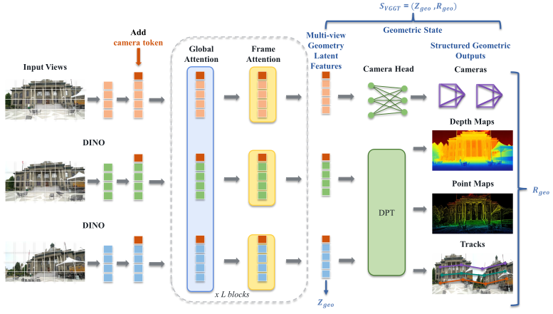

State strengthening5 directions
VGGT for 3D Reconstruction and Beyond
A Survey of Geometric State Strengthening and Its Applications

01 · Overview
A geometric-state view of VGGT research
VGGT jointly predicts cameras, point maps, depth maps, and tracks from multiple images in one feed-forward pass. Its geometric state contains two components: multi-view geometry latent features and structured geometric outputs.
State strengthening improves how the geometric state is formed from diverse inputs, computed efficiently, made robust, retained across streams and long sequences, or extended to dynamic scenes. State reuse uses the features, outputs, or their combination in downstream applications.
- Zgeo
- Multi-view geometry latent features. Features formed by aggregating information within and across input views.
- Rgeo
- Structured geometric outputs. Cameras, point maps, depth maps, and tracks decoded from those features.
Read the abstract
Development of the VGGT lineage around geometric state

02 · Taxonomy
Strengthen the state. Reuse the state.
State reuse5 applications
03 · Literature
Explore the reviewed papers
No papers match the current filters.
04 · Datasets and benchmarks
Evaluation depends on the evidence a dataset provides
Explore datasets for 3D reconstruction, novel-view synthesis, and other downstream tasks, together with the tasks, metrics, and comparison conditions used for evaluation.
The overview shows how many datasets in each group provide observations or annotations that support each evaluation task. Percentages are calculated within each group of reviewed datasets.
0%100%
Search dataset capabilities
| Dataset | Dataset group | #Scenes | Type | Source | Supported evaluation tasks |
|---|
No datasets match the current filters.
Dataset scale is reported as scene counts. For Oxford RobotCar, OmniWorld, and SPair-71k, a scene count was not identified in the cited source; frame or pair counts indicate scale instead.
05 · Open challenges
Open challenges
Reliable and persistent geometric state
How can geometric state remain dependable as measurements, sequence length, and scene motion change?
Adaptive geometric representations for downstream applications
How can one state expose the information needed by different applications without rebuilding a separate representation for each application?
Dataset design for benchmarking geometric state
How can controlled comparisons determine whether application gains arise from changes in or reuse of geometric state?
Citation
Cite the survey